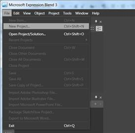
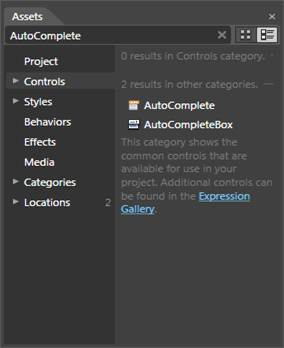
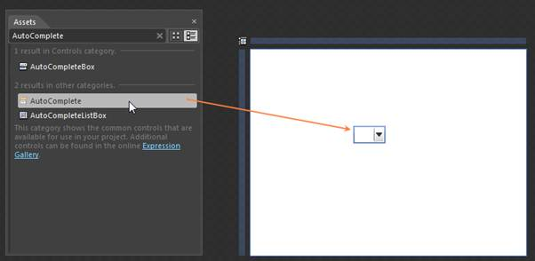
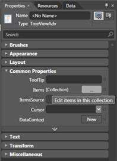
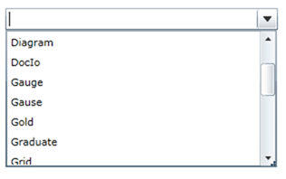

The AutoComplete control provides full Blend support. Here are the step-by-step instructions to create Silverlight application in Blend.
1. Open Blend, On the File Menu, click New Project. This opens the New Project dialog box as shown below.

Figure 25: Adding New project in Expression Blend
2. In the Project type’s panel, select Silverlight Application and then click OK.

Figure 26: Adding New Silverlight Application in Expression Blend
3. Add the following Reference with the sample project.
· Syncfusion.Tools.Silverlight.dll
4. On the Window menu, select Assets. This opens the Assets Library dialog box. In the Search box, type AutoComplete. This displays the search results as shown below.

Figure 27: AutoComplete Displayed in Assets window
5. Drag the AutoComplete control to the Design View.

Figure 28: AutoComplete drag & drop from Assets window
6. You can now customize the properties of the AutoComplete in the Properties Window.

Figure 29: Properties window
|
[XAML] <local:ProductSource x:Key="Src"/> <syncfusion:AutoComplete x:Name="AutoComplete1" CustomSource="{StaticResource Src}"/> |
|
[C#] List<String> ProductSource = new List<String>(); customSource.Add("Diagram"); customSource.Add("Gauge"); customSource.Add("GridView"); customSource.Add("Chart"); customSource.Add("Business Intelligence"); customSource.Add("Schedule"); customSource.Add("Grid"); customSource.Add("DocIo"); customSource.Add("XlsIo"); customSource.Add("Pdf"); |

Figure 30: AutoComplete Created Using Blend